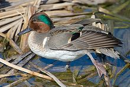
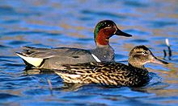
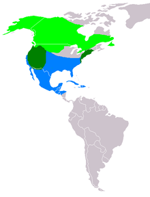

| Green-winged Teal | |
|---|---|
|  | |
| male | |
|  | |
| A pair, male in nuptial plumage at rear | |
| Binomial name | |
| Anas carolinensis Gmelin, 1789 |
|
|  | |
|
|
| Synonyms | |
|
Anas crecca carolinensis |
The Green-winged Teal (GWT, Anas carolinensis) is a common and widespread duck that breeds in the northern areas of North America except on the Aleutian Islands. It was considered conspecific with the Common Teal (A. crecca) for some time but the issue is still being reviewed by the American Ornithologists' Union;[1] based on this the IUCN and BirdLife International[2] do not accept it as a separate species at present. However, nearly all other authorities consider it distinct based on behavioral,[3] morphological,[4] and molecular evidence.[5][6]
This dabbling duck is strongly migratory and winters far south of its breeding range. It is highly gregarious outside of the breeding season and will form large flocks. In flight, the fast, twisting flocks resemble waders.
This is the smallest North American dabbling duck. The breeding male has grey flanks and back, with a yellow rear end and a white-edged green speculum, obvious in flight or at rest. It has a chestnut head with a green eye patch. It is distinguished from drake Common Teals (the Eurasian relative of this bird) by a vertical white stripe on side of breast, the lack of both a horizontal white scapular stripe and the lack of thin buff lines on its head.
The females are light brown, with plumage much like a female Mallard. They can be distinguished from most ducks on size and shape, and the speculum. Separation from female Common Teal is problematic.
In non-breeding (eclipse) plumage, the drake looks more like the female.
It is a common duck of sheltered wetlands, such as taiga bogs, and usually feeds by dabbling for plant food or grazing. It nests on the ground, near water and under cover. While its conservation status is not evaluated by IUCN at present due to non-recognition of the taxon, it is plentiful enough to make it a species of Least Concern if it were; it is far more plentiful than the Common Teal.[7] It can be seen in vast numbers in the Marismas Nacionales of western Mexico, a main wintering area.
This is a noisy species. The male has a clear whistle, whereas the female has a feeble "quack".
{kind=link}
{kind=link}
{kind=link}